What Problem Does ATNA Solve?
Regular TNA looks at pairs of states that happen one right after the other. If a student does Plan at time 3 and Monitor at time 4, TNA counts that as a transition. But it ignores the relationship between Plan at time 3 and Adapt at time 7. Those two events are four steps apart, so TNA treats them as unrelated.
That is a problem when earlier events still matter later on. A student who plans at the start of a session is still influenced by that planning when they adapt several steps later. A user’s first prompt in a chatbot conversation shapes the responses several turns down the line. In these cases, the connection between two events is real — it’s just not immediate.
ATNA fills this gap. Instead of only counting adjacent transitions, it looks at all pairs of states across the whole sequence and weights them by how far apart they are. Close events get high weight. Distant events get low weight. The weight drops off following an exponential curve, so nearby things matter a lot and far-away things matter a little — but they still matter.
The Intuition
Take this sequence of student actions:
Plan → Monitor → Discuss → Emotion → Adapt → Monitor → PlanRegular TNA draws a line between each pair of neighbors: Plan→Monitor, Monitor→Discuss, Discuss→Emotion, and so on. Seven events produce six edges.
ATNA draws lines between every pair, but with decreasing weight:
- Plan→Monitor (1 step apart): strong connection
- Plan→Discuss (2 steps apart): weaker
- Plan→Emotion (3 steps apart): weaker still
- Plan→Adapt (4 steps apart): faint
- Plan→Monitor (5 steps apart): very faint
- Plan→Plan (6 steps apart): barely there
It does this starting from every event in the sequence. All these weighted connections get added up across every sequence in the data. The result is a weight matrix where each cell captures how often state A appears before state B, weighted by how close together they tend to be.
Building an ATNA Model
If you’ve used tna() before, this works the same way
with a different function name.
library("tna")
data("group_regulation")
model_atna <- atna(group_regulation, scaling = "minmax")
print(model_atna)
#> State Labels :
#>
#> adapt, cohesion, consensus, coregulate, discuss, emotion, monitor, plan, synthesis
#>
#> Edge Weight Matrix :
#>
#> adapt cohesion consensus coregulate discuss emotion monitor plan
#> adapt 0.0000 0.045 0.092 0.013 0.019 0.024 0.0076 0.022
#> cohesion 0.0035 0.029 0.309 0.084 0.076 0.087 0.0270 0.145
#> consensus 0.0263 0.085 0.407 0.418 0.513 0.260 0.1415 1.000
#> synthesis
#> adapt 0.000076
#> cohesion 0.005746
#> consensus 0.041905
#> [ reached 'max' / getOption("max.print") -- omitted 6 rows ]
#>
#> Initial Probabilities :
#>
#> adapt cohesion consensus coregulate discuss emotion monitor
#> 0.011 0.060 0.214 0.019 0.175 0.151 0.144
#> plan synthesis
#> 0.204 0.019You get a weight matrix and initial probabilities, just like regular
TNA. The difference is in what the weights represent. In TNA, they are
transition probabilities (they add up to 1 per row). In ATNA, they are
accumulated attention weights across all temporal distances, scaled to
the 0–1 range by the scaling = "minmax" argument.
Plotting the Network
plot(model_atna, minimum = 0.05, cut = 0.1)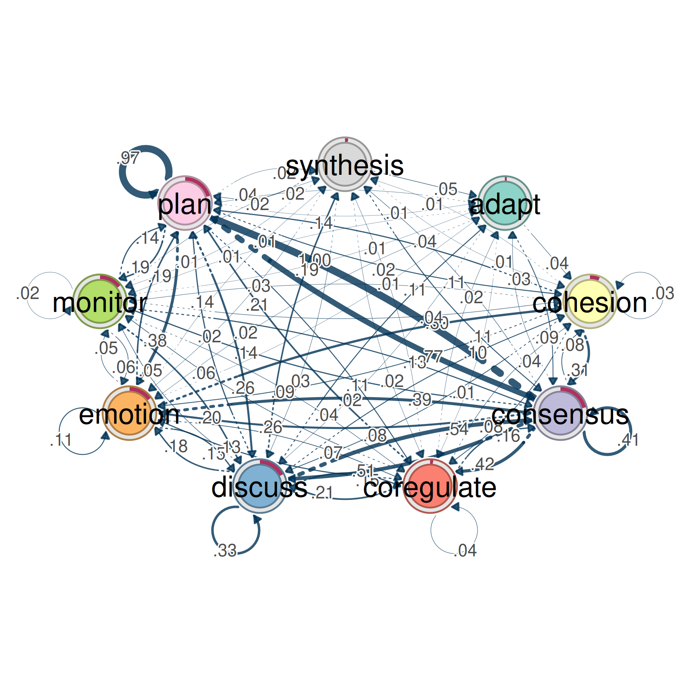
This produces the same style of network graph you get from
plot() on a regular TNA model. Nodes are states, edges are
weighted connections, and thicker arrows mean stronger
relationships.
The difference is what the arrows mean. In a regular TNA plot, a thick arrow from Plan to Monitor means “when Plan happens, Monitor tends to come next.” In an ATNA plot, a thick arrow from Plan to Monitor means “when Plan happens, Monitor tends to show up somewhere afterward — not just in the very next step, but across the whole sequence, weighted by distance.”
The minimum argument hides edges below that weight. The
cut argument removes edges that are too weak to be
meaningful. Raising these values thins out the network so you can focus
on the strongest connections. Start with minimum = 0.05 and
adjust from there.
You can also look at the distribution of edge weights:
hist(model_atna)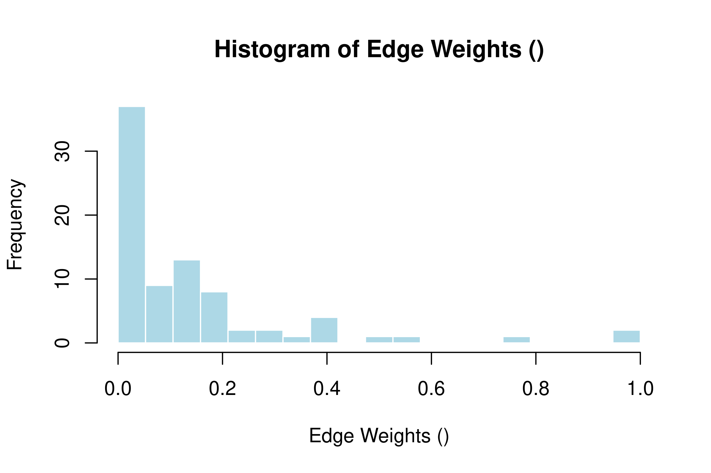
This histogram shows how the attention weights are spread out. If most weights cluster near zero with a few high ones, the network has a clear backbone of strong connections. If weights are spread evenly, the network is more diffuse and harder to interpret — you may want to prune it more aggressively.
Centrality Analysis
Centrality tells you which states play the biggest role in the network.
cents <- centralities(model_atna, normalize = TRUE)
print(cents)
#> # A tibble: 9 × 10
#> state OutStrength InStrength ClosenessIn ClosenessOut Closeness Betweenness
#> * <fct> <dbl> <dbl> <dbl> <dbl> <dbl> <dbl>
#> 1 adapt 0 0 0 0 0 0
#> 2 cohesion 0.228 0.224 0.198 0.512 0.443 0
#> 3 consensus 1 1 1 1 1 1
#> 4 coregulate 0.279 0.301 0.615 0.380 0.507 0
#> 5 discuss 0.548 0.536 0.775 0.828 0.894 0.457
#> 6 emotion 0.421 0.405 0.452 0.684 0.575 0.2
#> 7 monitor 0.180 0.136 0.221 0.283 0.272 0
#> 8 plan 0.714 0.724 0.868 0.910 0.841 0.486
#> 9 synthesis 0.0278 0.0325 0.213 0.0712 0.181 0
#> # ℹ 3 more variables: BetweennessRSP <dbl>, Diffusion <dbl>, Clustering <dbl>This gives you three measures for each state:
- InStrength: how much attention flows into this state from other states. A state with high InStrength is a common destination — other events tend to be followed by it, even several steps later.
- OutStrength: how much attention flows out of this state toward other states. A state with high OutStrength has a long reach — when it happens, it shapes what comes after it across multiple future steps.
- Betweenness: how often this state sits on the shortest path between other states. A state with high betweenness acts as a bridge connecting different parts of the network.
To plot all three:
plot(cents)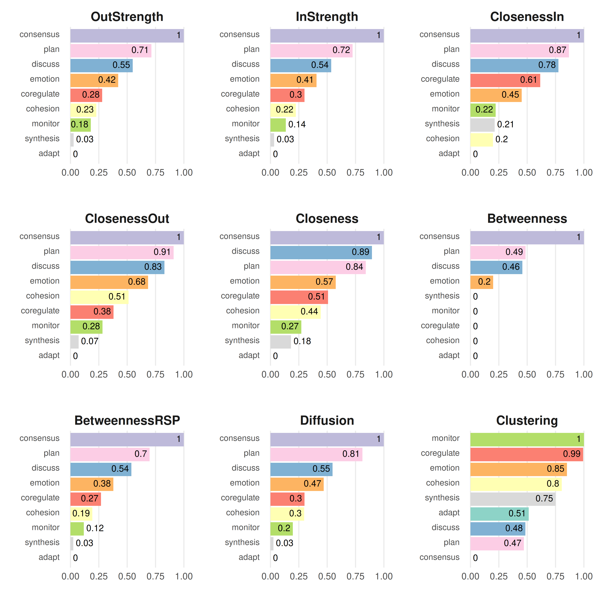
This makes a bar chart with states on the x-axis and centrality scores on the y-axis, one panel per measure.
Reading the results: compare what ATNA centralities tell you against what you’d get from regular TNA. A state might have low OutStrength in TNA (it doesn’t strongly predict the very next step) but high OutStrength in ATNA (it has a broad, lasting influence across many future steps). That kind of state matters more than a first-order analysis would suggest.
Patterns: Communities and Cliques
Communities
Communities are groups of states that are more tightly connected to each other than to the rest of the network.
comms <- communities(model_atna)
plot(comms)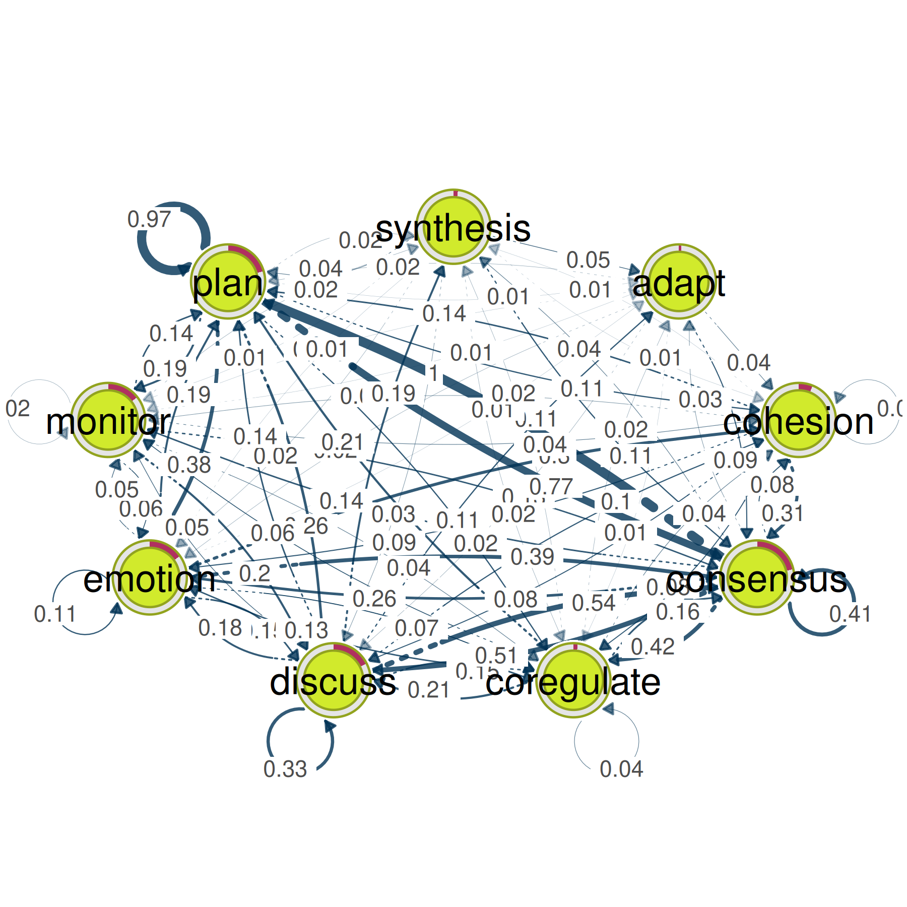
The plot colors each community differently and draws the network with community boundaries visible. States within the same community tend to co-occur in temporal proximity — they form clusters of related activity.
In ATNA, communities can look different from what you’d find in regular TNA, because ATNA captures longer-range relationships. Two states that rarely follow each other directly but often appear within a few steps of each other can end up in the same community under ATNA even though TNA would put them in separate ones.
Cliques
Cliques are small groups of states where every state has a strong connection to every other state in the group.
layout(t(1:3)); par(mar = c(0,0,0,0))
cliq <- cliques(model_atna, size = 2, threshold= 0.2)
print(cliq)
#> Number of 2-cliques = 3 (weight threshold = 0.2)
#> Showing 3 cliques starting from clique number 1
#>
#> Clique 1
#> consensus emotion
#> consensus 0.41 0.26
#> emotion 0.39 0.11
#>
#> Clique 2
#> consensus plan
#> consensus 0.41 1.00
#> plan 0.77 0.97
#>
#> Clique 3
#> consensus discuss
#> consensus 0.41 0.51
#> discuss 0.54 0.33
plot(cliq, vsize = 20, edge.label.cex = 2)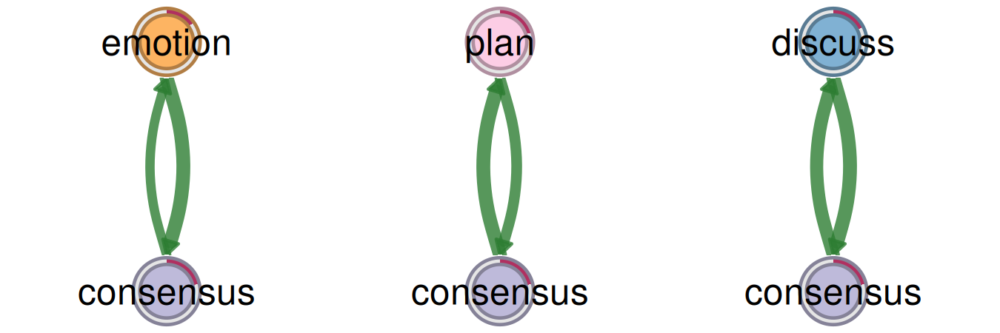
The size argument sets the minimum clique size (2 means
pairs, 3 means triangles, etc.). The threshold argument
sets the minimum edge weight needed for two states to count as
connected.
In ATNA, a clique means those states all have strong long-range attention toward each other. A 3-clique of {Plan, Monitor, Adapt} means that whenever any one of those three shows up, the other two tend to appear nearby (within the attention window), no matter the exact step distance.
Validation
Before interpreting results, check that they are stable.
Bootstrap
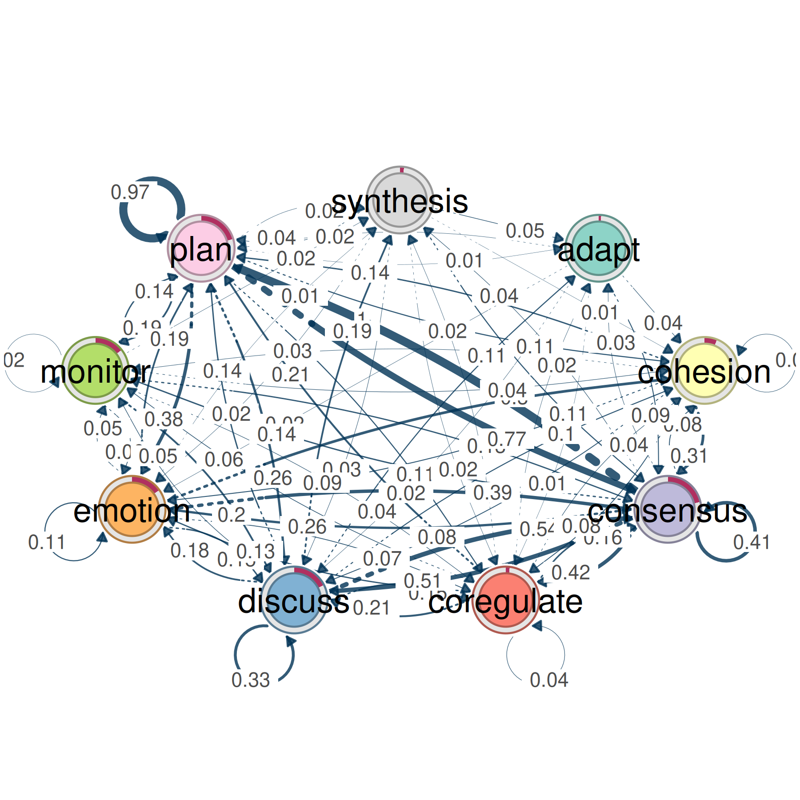
This resamples your sequences, rebuilds the model each time, and checks how often each edge exceeds the threshold. Edges that appear in a high percentage of bootstrap samples (say 95%+) are stable. Edges that come and go are not reliable.
Centrality Stability
stab <- estimate_centrality_stability(model_atna)
print(stab)
#> Centrality Stability Coefficients
#>
#> InStrength OutStrength Betweenness
#> 0.9 0.9 0.9
plot(stab)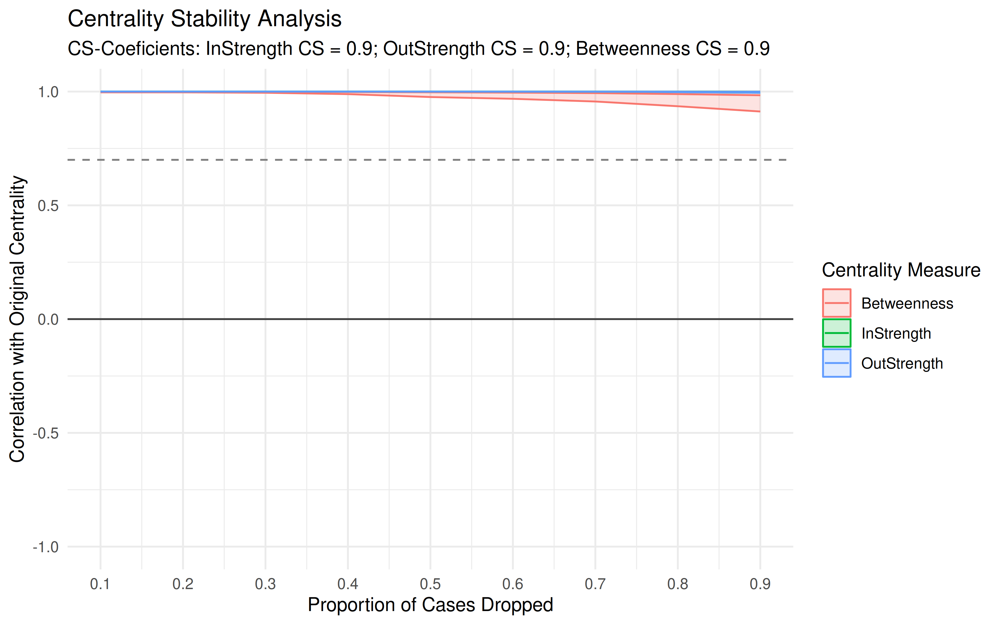
This drops increasing fractions of your data and recalculates centrality each time. The stability coefficient tells you how much data you can lose before the centrality rankings start to change. A coefficient above 0.5 is generally considered stable. Below that, your centrality rankings may not hold up with less data.
Group Comparisons
Building Group Models
To compare groups (e.g., high- vs. low-achieving students), use
group_atna():
data("group_regulation_long")
prepared <- prepare_data(
group_regulation_long,
actor = "Actor",
time = "Time",
action = "Action"
)
gtna <- group_atna(prepared, group = "Achiever")Plotting Group Networks
plot(gtna)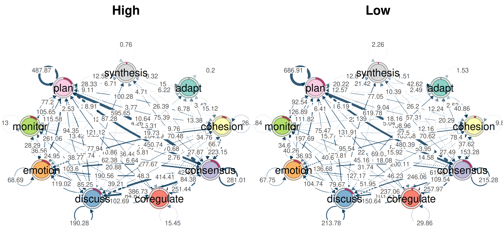
This puts the network for each group side by side. You can visually compare which edges are thick or thin in each group. If one group has a strong Plan→Monitor connection and the other doesn’t, that difference will be visible.
Comparing Centralities Across Groups
plot(centralities(gtna))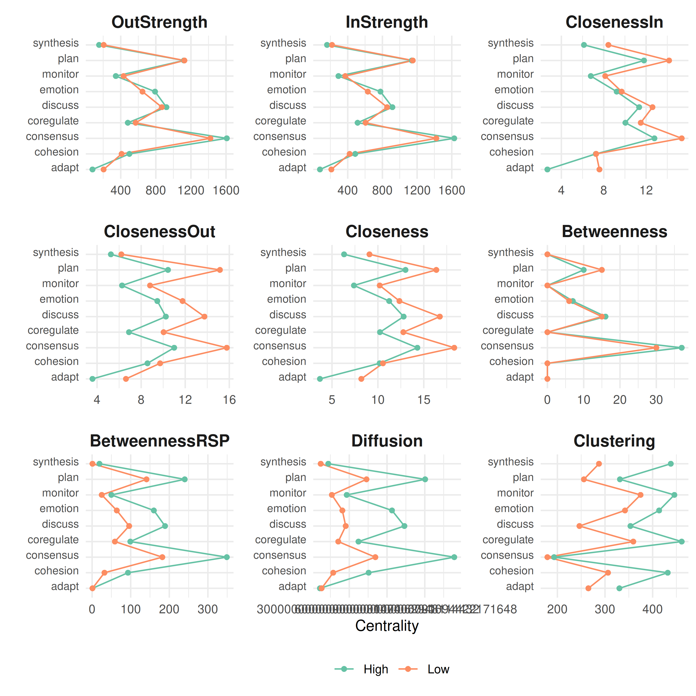
This makes centrality bar charts for each group. Look for states where the bars are very different across groups — those are the states whose role changes depending on group membership.
Difference Network
plot_compare(gtna)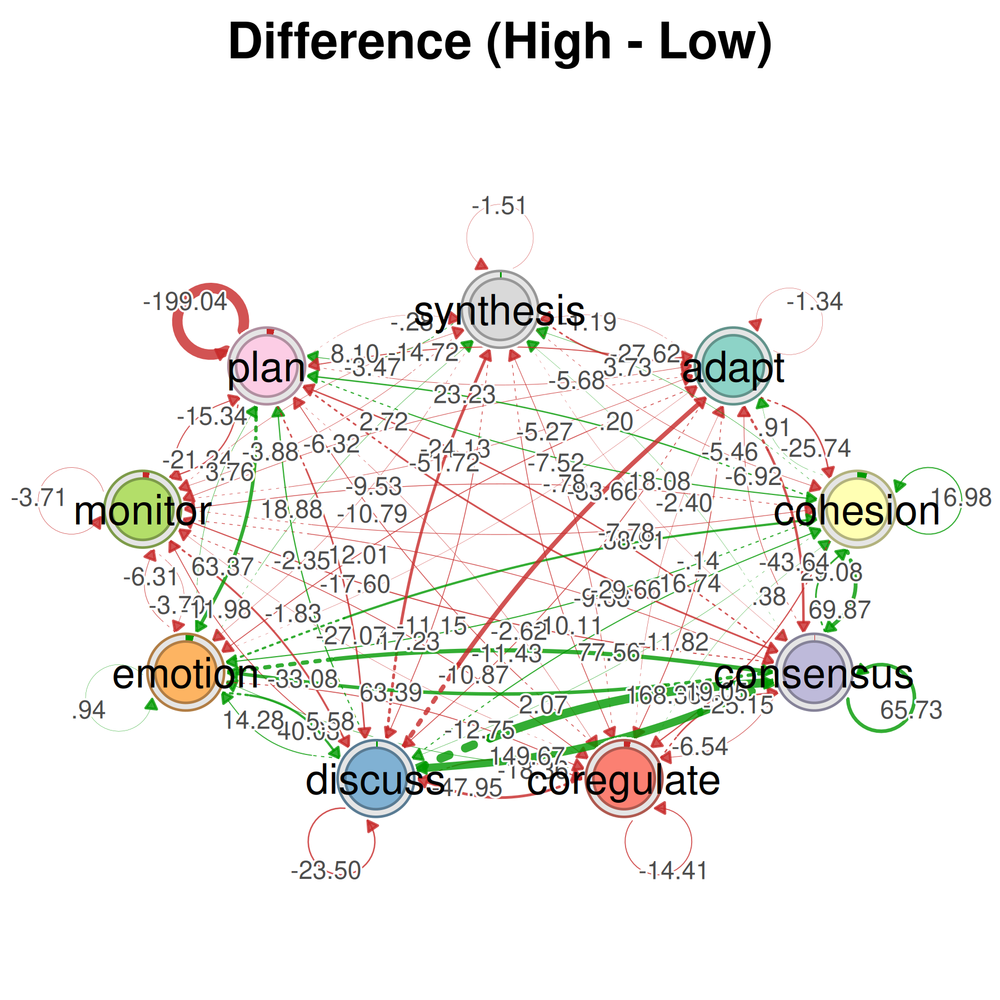
This draws a single network where each edge shows the difference between groups. Positive edges (one color) are stronger in the first group; negative edges (another color) are stronger in the second group. It is the fastest way to see where the two groups diverge.
Permutation Test
perm <- permutation_test(gtna, iter = 1000)
print(perm)
#> High vs. Low :
#> # A tibble: 81 × 4
#> edge_name diff_true effect_size p_value
#> <chr> <dbl> <dbl> <dbl>
#> 1 adapt -> adapt -1.34 -3.18 0.00200
#> 2 cohesion -> adapt 0.907 0.895 0.373
#> 3 consensus -> adapt -6.92 -2.62 0.0150
#> 4 coregulate -> adapt -2.40 -1.04 0.311
#> 5 discuss -> adapt -83.7 -11.4 0.000999
#> 6 emotion -> adapt -0.777 -0.598 0.563
#> 7 monitor -> adapt -5.27 -3.04 0.000999
#> 8 plan -> adapt -5.68 -3.59 0.000999
#> 9 synthesis -> adapt -27.6 -5.84 0.000999
#> 10 adapt -> cohesion -25.7 -5.87 0.000999
#> # ℹ 71 more rows
plot(perm, minimum = 0.01)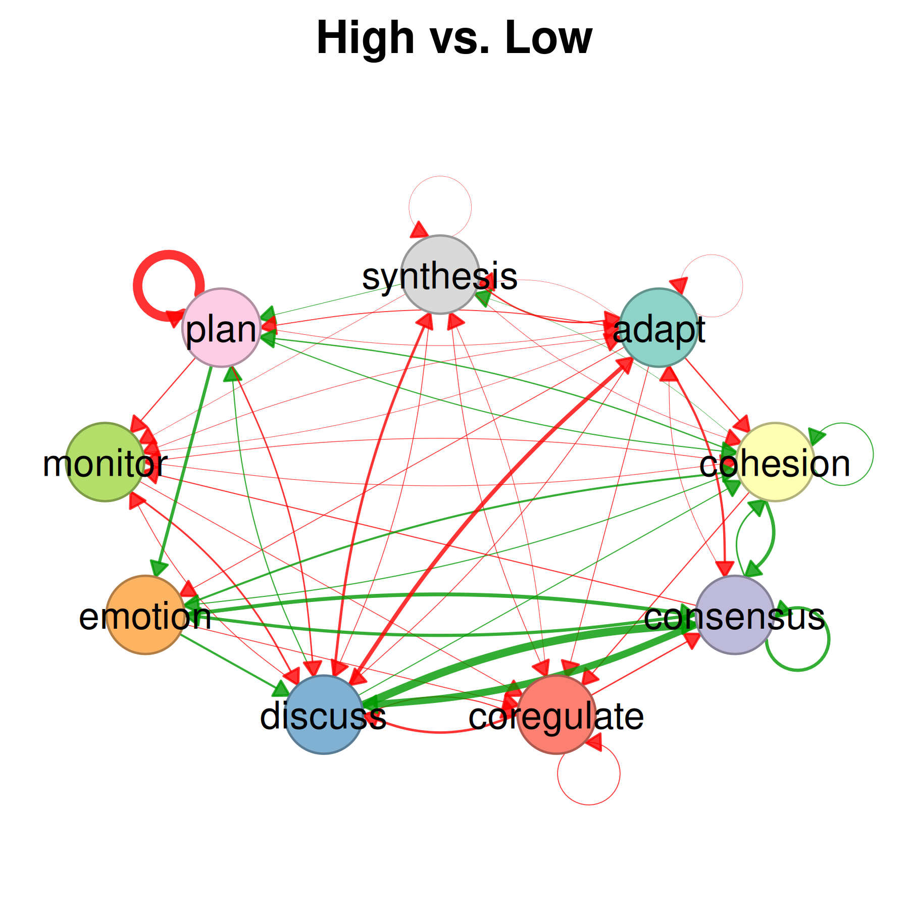
This tests whether the observed differences between groups are bigger than what you’d expect by chance. It shuffles the group labels 1000 times, recomputes the group models each time, and compares the real difference to the shuffled differences. Edges with small p-values are where the two groups differ in a way that is unlikely to be random.
The plot shows the network of significant differences. Only edges that passed the permutation test are visible.
When to Use ATNA vs. Regular TNA
| Situation | Use |
|---|---|
| You care about what happens in the very next step | tna() |
| You think events influence other events several steps later | atna() |
| Conversational data where early turns shape later turns | atna() |
| You want to find states that connect distant parts of the sequence | atna() |
ATNA and TNA can give different answers about which states are most central. A state might have weak immediate transitions (low importance in TNA) but strong long-range influence (high importance in ATNA). If the two methods agree on what matters, that’s good evidence the finding is solid. If they disagree, the disagreement itself is informative — it tells you the state’s role depends on the time scale you’re looking at.